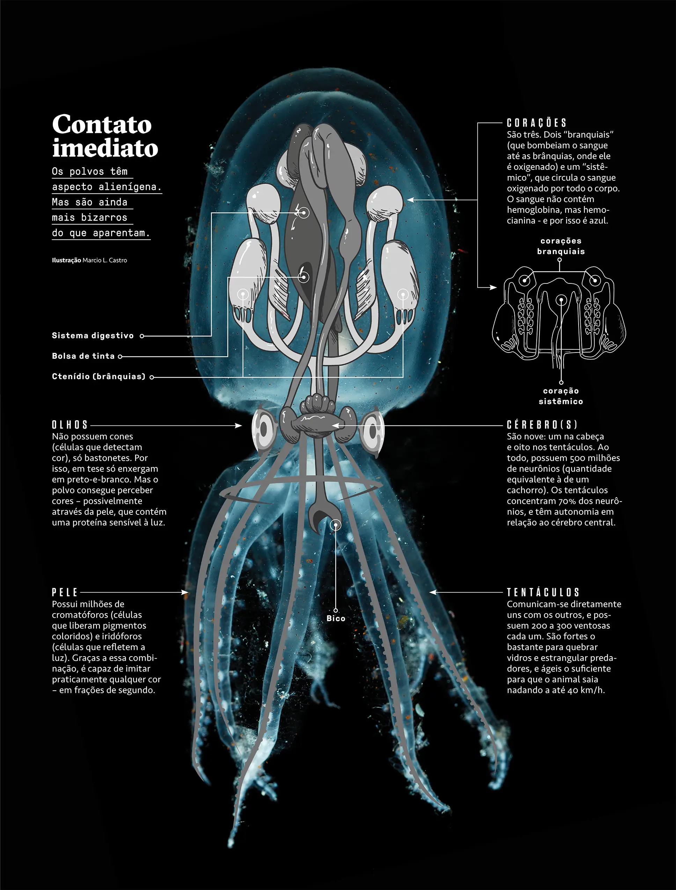
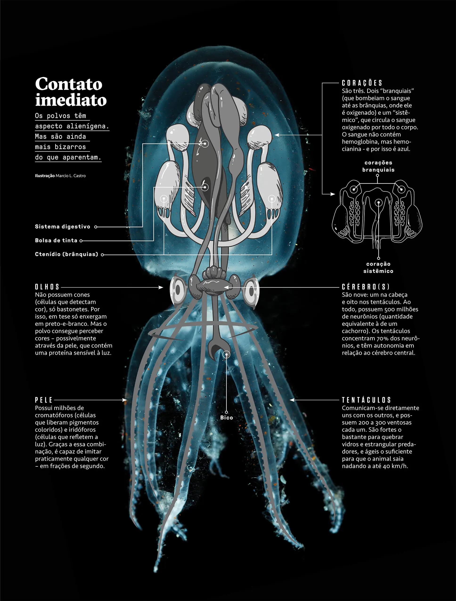
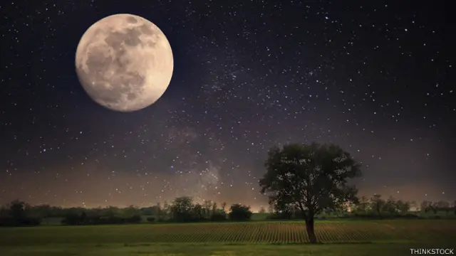
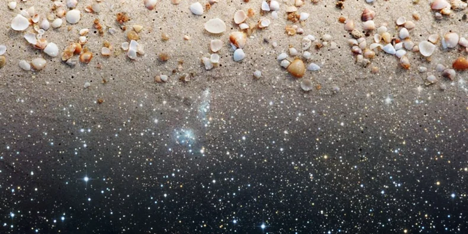

Você sabia?
O polvo tem três corações e o sangue azul!
O polvo tem três corações e o sangue azul!
A Lua se afasta da Terra cerca de 3,8 cm por ano.
Existem mais estrelas no universo do que grãos de areia em todas as praias da Terra.
Assista a um vídeo cheio de curiosidades interessantes!